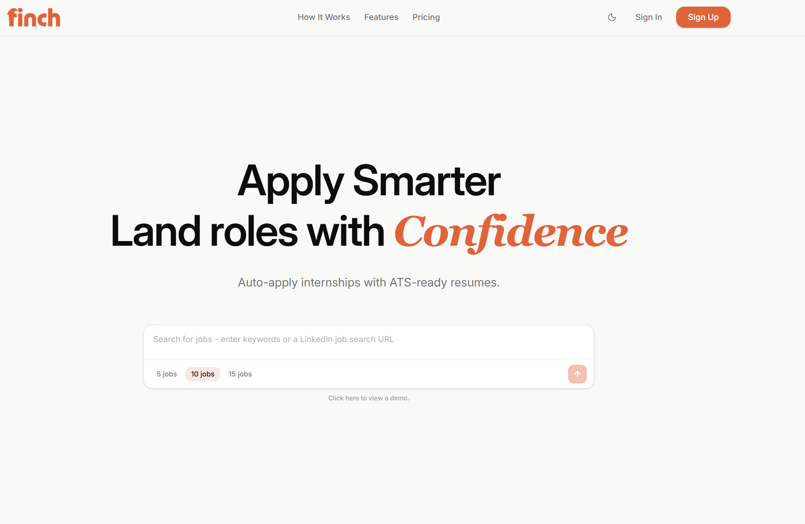
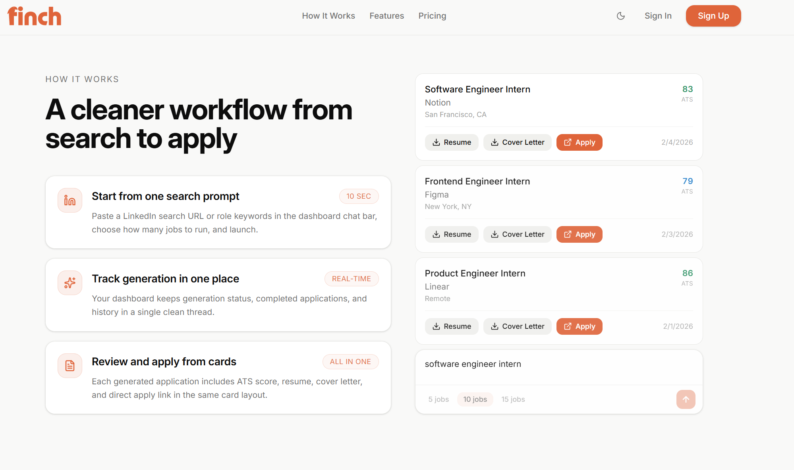

Sign up & connect LinkedIn
Users sign up and connect their LinkedIn profile. Advanced AI analysis generates a rich candidate profile automatically.
How It Works
Users sign up and connect their LinkedIn profile. Advanced AI analysis generates a rich candidate profile automatically.
The Chrome extension works across Greenhouse, Lever, Workday, and other major platforms — detecting applications as you browse.
For each job, Finch generates a tailored resume and cover letter matched to that specific role in seconds.
The extension fills the entire form including file uploads — stopping at the final review page so the user stays in control.
What normally takes 20–30 minutes now takes under 60 seconds — without sacrificing the quality that gets candidates past ATS filters.
Automatically apply to internships with resumes designed to pass ATS filters and land more interviews.


Generate, track, and review curated job applications in real-time from a single search prompt.
Install the Finch browser extension and finish repetitive forms in seconds with profile-aware answers.
.jpeg)

Generate role-specific resume versions, improve ATS alignment, and close keyword gaps before you submit.